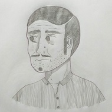
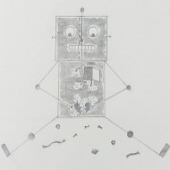
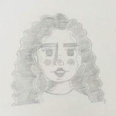
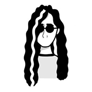
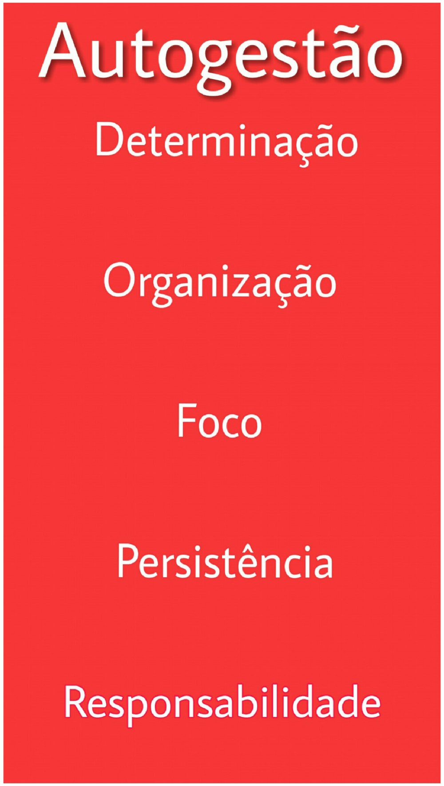
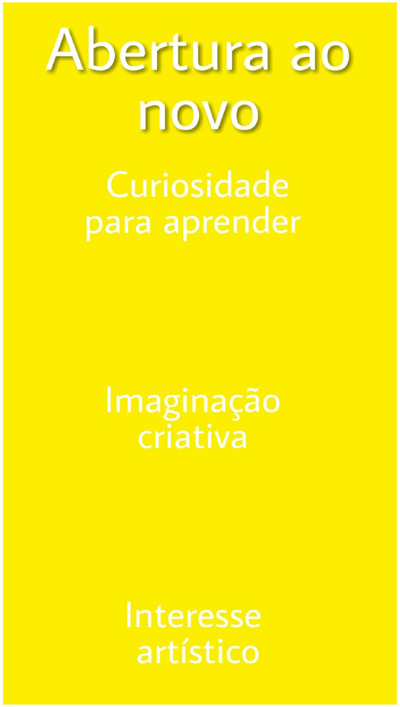
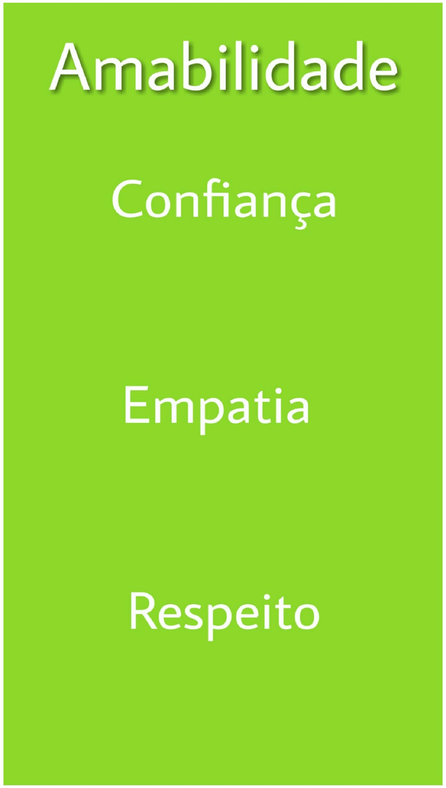

Sobre Mim
Atualmente estudo na ETEC Profª. Maria Cristina Medeiros, no curso de Informática para Internet Integrado ao Ensino Médio. Estudo inglês na Skill Idiomas e francês no meu tempo livre. Concluí os cursos de "Lógica de Programação Essencial" e "Conceitos de Responsividade e Experiência do Usuário" na Digital Innovation One.
Adoro desenvolver sites(com HTML, CSS e JavaScript) e editar de templates. Tenho facilidade em criar e manipular bancos de dados, apesar de ainda estar me aperfeiçoando. Neste momento, estou aprendendo a fazer edição de vídeos e criar animações, pois gosto muito de trabalhar com conteúdo digital e quero explorar mais essa área.
Em meu tempo livre, gosto de fazer edição de fotos, ilustrações, desenhar logotipos, etc. Também passo muito tempo lendo, sendo os meus livros preferidos: O Menino da Lista de Schindler, A Caçadora de Dragões e Star Wars - Estrelas Perdidas.
Trabalhos Manuais e Digitais:




Minhas principais competências socioemociais
Veja aqui quais são todas competências pela BNCC

Sou muito persistente e determinada a cumprir minhas obrigações independente da dificuldade. Mantenho o foco e a organização, administrando meu tempo da melhor maneira possível.

Sou muito criativa e por isso tenho facilidade para elaborar projetos e encontrar soluções criativas para determinados problemas. Adoro estudar e por isso estou sempre aprendendo coisas novas.

Manter o respeito e ter empatia para mim é muito importante. Não tenho dificuldade em trabalhar com outras pessoas e uso a comunicação como principal recurso para resolução de problemas.
Alguns dos Meus Trabalhos - Sites